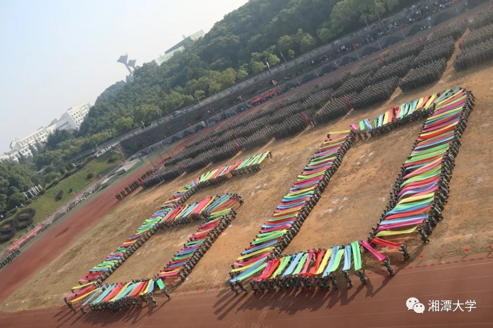
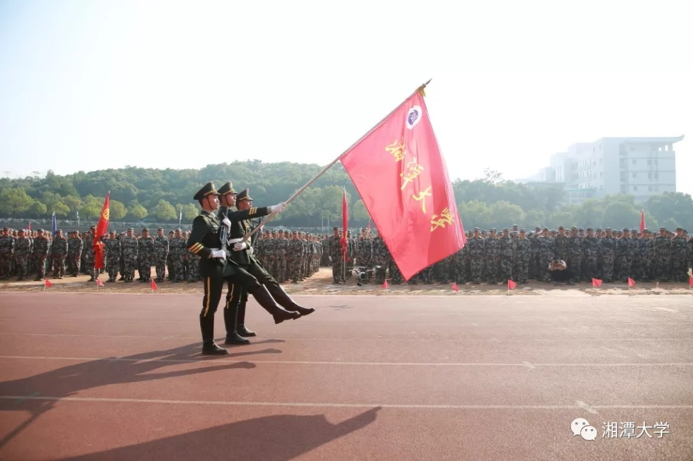
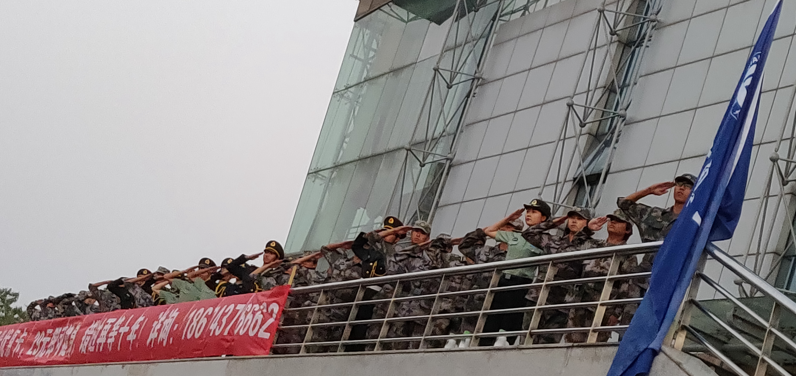

“我是兴湘人，我奋斗；我是湘大人，我骄傲”兴湘500人团体操方针伴着《再一次出发》在二田上舞动五彩绸带。斑斓的绸带在空中交织翻飞，拼凑出“60”、“XTU”的图案，彰显着兴湘学子对湘大的满腔热忱。彩色翩飞，飞起湘大的航程；绸带挥舞，舞出新时代的风貌。

彩旗队摆出的“60”字样

“升国旗，奏唱国歌”新生们双目炯炯面向国旗行注目礼，在庄严肃穆的旋律里，五星红旗和着朝阳在第二田径场上随风飘扬。“迎校旗，敬礼”3名护旗手护送校旗，眼神坚毅，步伐坚定，校歌悠扬，旌旗飘展，绿潮涌动。

“标兵就位，分列式开始。”随着指挥员的口令，7000余名新生排成整齐的方阵，迈着铿锵有力的步伐，精神抖擞地一一经过主席台，他们以饱满的精神和高昂的斗志向部队首长和学校、老师交上了入学以来的第一份答卷，向教官们献上了最为珍贵的礼物。第二田径场上留下了他们青春飞扬、潇洒利落的身姿。

向最美最帅的教官致敬！！！

图片及部分文案来源：湘潭大学公众号、湘大学生军训教官模拟营QQ空间、本人拍摄